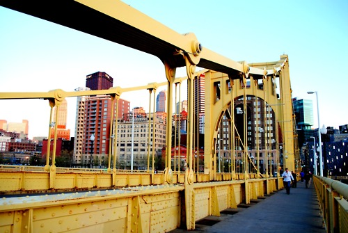

The Wedding & The Party
Our wedding will be held with the birds at:
The National Aviary
700 Arch St, Pittsburgh PA
Ceremony 6:00PM
Reception immediately following

Shuttles will be available between the Omni and Doubletree hotels
and The Aviary before and after the wedding/reception.
Where to Stay
We've reserved a block of rooms at the Omni William Penn and the DoubleTree -- located in bustling downtown, both are an easy 5-minute cab ride from the Aviary on the North Side as well as many other great Pittsburgh destinations (see map below).
- The DoubleTree Downtown
- $169 per night
- book online now
- Airport Shuttle Available
- Omni William Penn
- $160 per night
- call 412.281.7100 to book
- mention the Pastore/Hrabovsky Wedding
Prefer something smaller? Try The Priory Hotel or The Parador Inn
Things to Do
Registry
We are registered at Williams Sonoma and Crate & Barrel.
Getting There
If flying in to the Pittsburgh International Airport (PIT), downtown is just a quick 25 minute drive. If you're planning to explore the area a bit, there are plenty of car rental counters near the baggage claim and rates are quite reasonable. Proceed to the landside terminal, lower level, exit through the "commercial" doors, and proceed to the taxi stand area on the curb. On average, you can expect to pay:
- Taxi
- $40
- Shuttle
- $25
- Private Car
- $65
All major hotels in the downtown area have taxis waiting outside their front doors. In other areas of the city, look for taxi stands or call Yellow Cab Co. 412.321.8100. There is also a small metro connecting the downtown that is clean, fast, and free.
Directions to the DoubleTree Downtown Hotel (map)
Feel free to contact us with questions!

Jess Pastore & Lucas Hrabovsky
Check back soon for Pittsburgh trivia, and an explanation for our ridiculous love of owls.